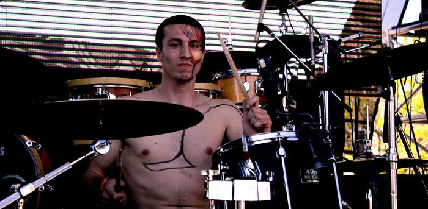
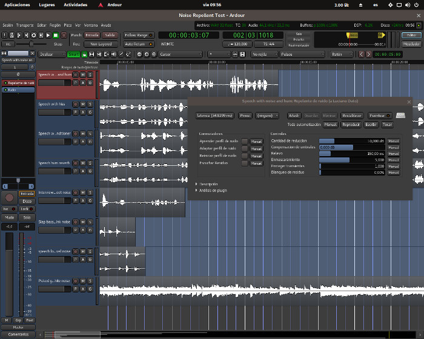
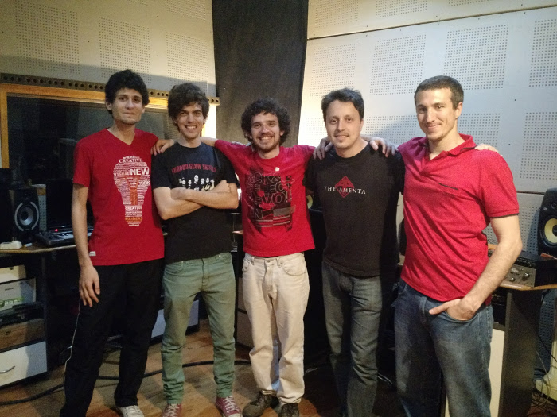
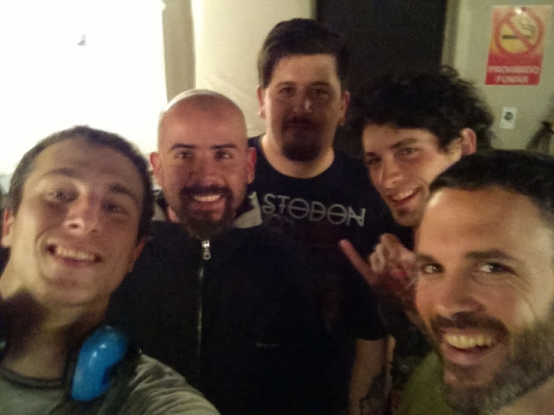
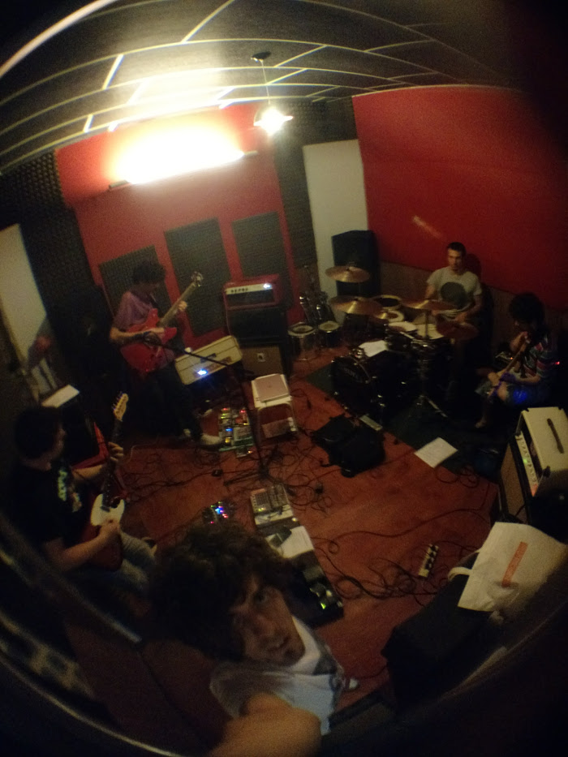
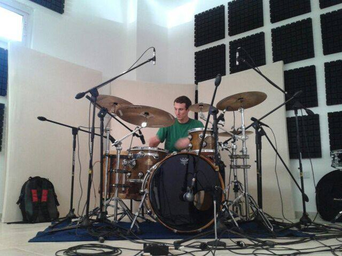
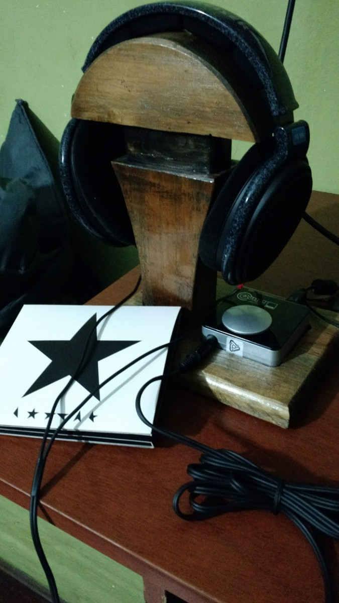

LMP Asks #24: An interview with Luciano Dato
This time we talk to Luciano Dato, creator of Noise Repellent, a realtime noise reduction plugin.

Hi Luciano, thank you for taking the time to do this interview. Where do you live, and what do you do for a living?
I live in Santa Fe, Argentina and I work as a sysadmin/technician in a small IT company.
Can you tell us a bit about the history of Noise Repellent?
Since I learned how to record music in a computer I’ve being always interested in how audio gets processed to sound a certain way and I quickly became a plugin geek. I was astonished when iZotope RX 3 was out. Particularly at their spectral denoise tool. I couldn’t understand how they achieved such extreme processing with such little artifacts. It was certainly magic to me.
At the same time I remember reading a forum post in KVR site that this was something really needed in the community. Coincidentally I was being introduced to DSP processing at a university course and I was very interested with everything DSP related since then.
Fast forward a couple of years and I was at the point of deciding what was going to be my final course project, so I took the chance to develop an LV2 plugin to fill that gap. The project was well received by my professors by the premise that there was nothing realtime in Linux before for this kind of processing. Hence noise-repellent.

Noise repellent test session with latest developments
Can you tell us a bit about any other projects you are involved in?
Software-wise not much else now. I would like in the future be involved in something bigger like Ardour or LMMS but that involves lots and lots of code reading. Right now I only have the time for noise-repellent and not much else.
Maybe improving Audacity's denoising tool could be another good future project. I can implement various methods that are not applicable in real time like 2D processing and improve much more what is already there.
What is your musical background?
I’m a drummer of two rock bands here in Santa Fe. One of them is more like progressive folk-rock and is called 'Infusion Kamachui' and the other is straight hard rock/stoner and is called 'Quemarrancho'.

Infusion Kamachui at the studio (Luciano is the guy on the far right)

Luciano (far left) and his pals from Quemarrancho
I started playing drums at the age of 15 and at first was very influenced by American and British rock music. Bands like RHCP, Led Zeppelin, Queen, Nirvana, Stone temple Pilots, Pearl Jam were my cup of tea. Throw into that mix too most of "rock nacional" big acts like Soda Stereo, Los Pericos, any of Luis Alberto Spinetta bands and of course including local bands of my city like La Cruda, Butumbaba, Carne Viva and a big etc.
Growing up I stated to listen more to jazz, reggae, ska and more progressive kinds music. Lately I've been exploring much more my country's folk music and weirdly enough electronic music genres like drum and bass and (opposite extremes). It is clear that I love most music styles.
What is your typical workflow when making music?
I have the pleasure of making music with other people. Everything I do these days is in the rehearsal room jamming with my pals.

Rehersing with Infusion Kamachui
When I do have to use the computer, that is pre-production/demoing kind of work, my workflow consists typically in firing up Ardour or Mixbus and write some drums using Drumgizmo, record other band members instruments and work up from there then. Of course that includes using a-plugins, Klangfalter and what it’s included in Mixbus mixer.
I had mixed and mastered my bands songs in the past but today I’m more dedicated to drumming and not doing that kind of work seriously.

Recording drums in Levrin Studio
Tell us a bit about your hardware set up
I have an old MSI laptop with a third generation i7 (still useful for audio production stuff) a Focusrite VRMbox soundcard and my trusty Sennheisers HD600 headphones.
I own a Focusrite Saffire Pro40 soundcard too but currently I have no PC to hook it up to. I use it mainly for monitoring purposes when playing live with any of my bands. Hardware processing related, I don’t have anything. I’m more like an ITB guy.

Luciano's monitoring chain, Focusrite VRMbox and HD600s (on a stand that Luciano's dad made for him) and Bowie's last album
What is your history with Linux?
Those Ubuntu “Linux for human beings” stickers did the trick for me. I said to myself “Hey I’m a human being. Why not use Linux?”.
Joking aside being an engineer student I was exposed to it since the beginning of my career.
I believe the switch occur around the time that Ubuntu 9.04 was released. It was a no brainer for me. It was not so difficult to learn and no viruses plus I learned a lot about libre culture. Months later all my family was using Linux.
Since that time I wondered around various flavours of Debian and Arch. Today I am settled in Ubuntu again with KXstudio repos.
Why do you feel open source is important, and what for you is the most important aspect of Linux audio?
The fact that open source permits discussing concepts and improve software based on collaboration is pretty much its best strength.
I think the most important aspect of Linux audio is the fact that there’s a great little community around it of very kind and knowledgeable people that are willing to help even angry Windows users that expect Linux to work the same.
What do you feel is currently lacking in Linux audio?
Well, I ask this to myself all the time. I think that what Linux audio lacks is mainly up to date documentation. If there were up to date tutorials and documentation you wouldn’t have users in forums complaining about PulseAudio breaking their JACK instance and giving up on Linux completely. No wonder that happens, often they are reading 2009 wikis.
This has improved over the years but is still a bit lacking. Digging a bit deeper I think we as users, and developers, should prioritize refinement of current tools (GUIs, DSP, workflow, etc). That is what most users would love to see.
What is your favourite FLOSS plugin?
I’m in between Drumgizmo (obviously) and Robin’s (x42) meters. Guitarix is great too!
Playing in an auditorium
Are there any FLOSS projects that you are excited about at the moment?
I’m interested in the outcome of JACK 1 and 2 now that falkTX is maintaining them both. Whatever falkTX touches it instantly improves.
What changes, if any, would you like to see within the Linux Audio community?
Linux audio is full of developers and not so much musicians. It would be great to grow the musicians user base (especially spanish speaking ones).
More participation would be helpful too but that comes naturally with a bigger user base.
What advice would you give to a new Linux Audio user?
Learn how to use IRC. Go to freenode and enter #ardour #linuxmusicians and various other channels.
Go to linuxmusicians.com forum and sign up. Join Linux audio group on Facebook if you are there.
Be patient, ask, share and question everything! Linux audio is all about community and making it better together.